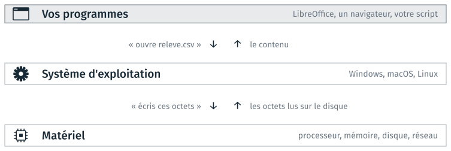
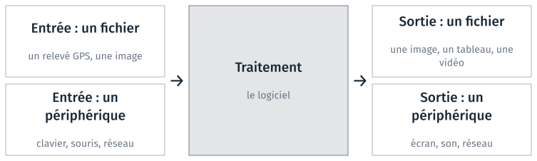
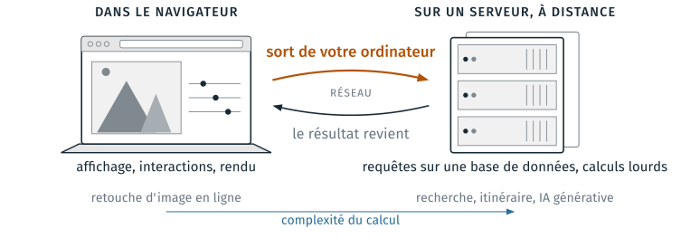
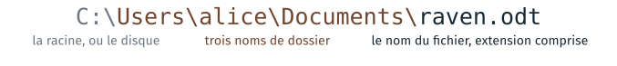
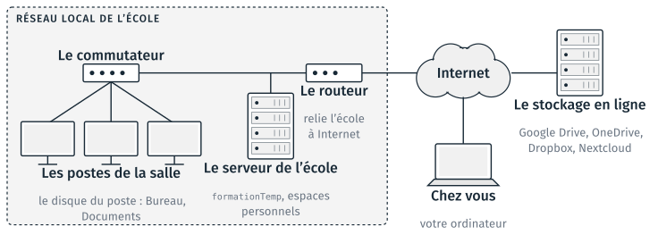

Logiciels, fichiers et stockage#
Cette partie définit ce qu’est un logiciel, le système d’exploitation sur lequel il s’appuie, les données qu’il lit et celles qu’il produit. Elle traite ensuite des fichiers : leur utilité, leur extension, le vocabulaire de leur chemin, et les disques où ils sont enregistrés, sur le poste ou sur le réseau. Le TD 1a l’accompagne ; il est présenté en fin de page.
Logiciel : définition et termes courants#
Logiciel
Ensemble des programmes, procédés et règles, et éventuellement de la documentation, relatifs au fonctionnement d’un ensemble de traitement de données.
Journal officiel du 22 septembre 2000, vocabulaire de l’informatique.
Parmi les termes de cette section, « logiciel » est le seul à avoir une définition officielle. Les termes courants qui suivent désignent chacun un type de logiciel, sans définition arrêtée ; leurs définitions d’usage sont dans le Grand dictionnaire terminologique de l’Office québécois de la langue française.
- Application
Logiciel qui sert à accomplir une tâche : un tableur, un navigateur, un logiciel de cartographie.
- App
Abréviation anglaise d’application, répandue par les magasins d’applications des téléphones. Le même logiciel existe souvent en site web, en programme de bureau et en application mobile.
- Webapp
Application qui s’utilise dans un navigateur. La section sur le lieu d’exécution y revient.
- OS
Operating system, le système d’exploitation : Windows, macOS, Linux.
- Driver
Le pilote d’un périphérique, qui permet au système d’exploitation de s’en servir.
Ces termes se rangent en deux familles :
le logiciel de base fait fonctionner la machine et donne accès au matériel : le système d’exploitation et les pilotes ;
le logiciel d’application sert à accomplir une tâche : LibreOffice, Firefox, un lecteur de musique.
Le système d’exploitation#
Un programme ne s’adresse pas directement au matériel. Il demande au système d’exploitation d’ouvrir un fichier, de réserver de la mémoire ou d’envoyer des données sur le réseau, et le système d’exploitation transmet la demande au matériel.

Un programme passe par le système d’exploitation pour atteindre le matériel.#
Le système d’exploitation répartit aussi le processeur et la mémoire entre les programmes ouverts en même temps, et les isole les uns des autres. Le même schéma vaut pour un téléphone, dont le système d’exploitation est Android ou iOS (environ 70 % et 30 % des téléphones dans le monde, StatCounter, 2026) ; Android est construit sur Linux.
Chaque système d’exploitation a ses conventions : les chemins de fichiers ne s’y écrivent pas de la même façon, et les outils installés diffèrent. Le matériel est traité au cours 5.
Entrées et sorties d’un logiciel#
Ce qu’un logiciel reçoit et ce qu’il produit sont de deux natures :
un fichier, qui est conservé sur un disque ;
un flux de données échangé avec un périphérique (clavier, écran, réseau), qui n’est pas conservé une fois lu ou affiché.

Les deux natures d’entrées et de sorties d’un logiciel.#
Ce qu’un programme garde en mémoire vive disparaît quand il s’arrête. Le module porte principalement sur les fichiers, parce qu’un fichier peut être relu, comparé, versionné, et ouvert par un autre logiciel.
Le lieu d’exécution d’une application web#
Des tâches qui demandaient un logiciel installé se font aujourd’hui dans un navigateur. Une application web répartit alors ses calculs entre deux machines : votre ordinateur, où le navigateur exécute une partie du programme, et un serveur distant, qui reçoit une requête par le réseau et renvoie le résultat.

Ce qui se calcule dans le navigateur, et ce qui se calcule sur un serveur.#
La répartition dépend de la complexité du calcul et de l’endroit où se trouvent les données :
recadrer une image se fait dans le navigateur : l’image y est déjà, et le calcul est léger ;
chercher dans l’index du web, calculer un itinéraire ou faire tourner un grand modèle de langage demande un serveur, près des données, bien trop volumineuses pour un ordinateur personnel ;
une requête sur une base de données, le cas le plus courant, part de la page et revient du serveur avec les lignes qui correspondent.
Pour une application donnée, la question pratique est de savoir quelles données sont envoyées au serveur, et à quel moment.
Utilité d’un fichier#
Un fichier conserve un résultat après l’arrêt du programme : un état de travail à reprendre, ou un document final à transmettre.
Ce qu’il permet |
Quand cela vous servira |
|---|---|
Conserver un résultat |
relire dans une semaine ce que le programme a produit |
Passer d’un logiciel à l’autre |
le tableau écrit par l’un, ouvert par l’autre |
Changer de machine |
de votre poste à celui de la salle, et retour |
Le remettre à quelqu’un |
un rendu, ou le dépôt partagé du cours 6 |
Pour qu’un fichier écrit par un logiciel soit lu par un autre, les deux respectent la même convention d’écriture : le format du fichier. La suite de la partie décrit comment reconnaître le type d’un fichier, et sur quel disque il est enregistré.
Extension et type de fichier#
L’extension est la fin du nom d’un fichier, après le dernier point. Elle indique le type du fichier (du texte, une image, une vidéo), et le système d’exploitation s’en sert pour choisir le logiciel à lancer au double-clic.
Le nom et l’extension d’un fichier.#
L’extension |
Ce qu’elle décide |
|---|---|
ce qu’elle fait |
le système choisit le logiciel à lancer au double-clic |
ce qu’elle ne fait pas |
elle ne modifie aucun octet du fichier |
comment on la change |
en renommant le fichier, comme le reste du nom |
L’extension indique donc le contenu sans le garantir. Renommer un
fichier .odt en .pdf ne le transforme pas en PDF, et le lecteur PDF ne
l’ouvre pas.
Avertissement
Windows masque par défaut les extensions des types qu’il connaît :
raven.odt s’affiche raven. Le réglage se change une fois, dans
l’explorateur : Affichage, Afficher, Extensions de noms de fichiers. Sous
macOS : Finder, Réglages, Avancé, « Afficher tous les suffixes de
fichiers ». Sans ce réglage, renommer un fichier ne montre pas l’extension
qu’on modifie.
Formats courants#
Le tableau donne, pour des extensions fréquentes, le type de contenu, et si le fichier se lit dans un éditeur de texte.
Extension |
Contenu |
Lisible dans un éditeur de texte |
|---|---|---|
|
son, compressé avec perte |
non |
|
vidéo, le format le plus courant |
non |
|
photo, compressée avec perte |
non |
|
image, compressée sans perte |
non |
|
image vectorielle, décrite en texte |
oui |
|
image, y compris les images géoréférencées (GeoTIFF) |
non |
|
document mis en page |
non |
|
document LibreOffice, une archive ZIP |
non |
|
classeur Excel, une archive ZIP |
non |
|
tableau de valeurs séparées par des virgules |
oui |
|
archive de fichiers |
non |
|
programme Windows |
non |
|
code Python |
oui |
|
documentation en Markdown |
oui |
|
données, réglages |
oui |
|
réglages |
oui |
Six de ces seize formats sont du texte : ils s’ouvrent dans un éditeur,
se comparent ligne à ligne et se versionnent. Deux cas sont moins évidents :
un .svg est une image, écrite en texte ; un .csv est un tableau, mais pas
un fichier Excel. Les quatre derniers, .py, .md, .json et .yaml,
sont ceux que vous écrirez dans ce module. Le cours 3 montre ce qu’un
fichier contient, octet par octet.
Le vocabulaire d’un chemin#
Un chemin indique où trouver un fichier dans l’arborescence des dossiers. Il se lit de gauche à droite, de la racine au fichier ; chaque séparateur descend d’un dossier.

Les parties d’un chemin.#
Le mot |
Ce qu’il désigne dans l’exemple |
|---|---|
la racine, ou le disque |
|
un nom de dossier |
|
le nom du fichier |
|
le chemin du fichier |
l’ensemble, de la racine au fichier |
le dossier parent |
|
« Dossier parent » est le terme des messages d’erreur ; le cours 3 l’emploie sans le redéfinir. La partie suivante écrit les chemins dans le terminal, en absolu et en relatif.
Les emplacements de stockage#
Un fichier est enregistré sur un disque : celui du poste, ou celui d’une autre machine que le poste atteint par le réseau. L’explorateur de fichiers présente les deux de la même façon.
Emplacement |
Qui y a accès |
D’une séance à l’autre |
|---|---|---|
Bureau, Documents : disque du poste |
votre session, sur ce poste |
conservés, sur ce poste seulement |
|
toute la promotion |
modifiable par tous |
espace personnel : serveur de l’école |
vous, depuis tout poste de l’école |
conservé |
stockage en ligne : serveur hors de l’école |
vous, et qui vous invitez |
conservé, recopié sur le poste |
clé USB |
qui a la clé |
ce que vous emportez |
Le serveur de l’école est relié aux postes par le réseau local. Le stockage en ligne est sur des serveurs hors de l’école, atteints par Internet.

Le réseau local de l’école, Internet, et les disques où un fichier peut être enregistré.#
Depuis chez soi,
formationTempet l’espace personnel ne sont pas accessibles ; depuis l’école, Internet l’est.Un stockage en ligne synchronisé (OneDrive, Google Drive, Dropbox, Nextcloud) garde le fichier sur le poste et sur le serveur, et recopie chaque modification dans les deux sens.
Lire un fichier sur le réseau est plus lent que sur le disque du poste ; le cours 5 en donne les ordres de grandeur.
Deux élèves dans le même dossier partagé#
Un fichier du dossier partagé est le même pour toute la salle. Avec un éditeur de texte, le dernier qui enregistre remplace la version de l’autre.
Heure |
Ce qui se passe |
|---|---|
10 h 00 |
Alice ouvre |
10 h 02 |
Bruno ouvre le même fichier |
10 h 10 |
Alice enregistre ses modifications |
10 h 15 |
Bruno enregistre : le fichier ne contient plus que les siennes |
Avertissement
Ne pas travailler dans formationTemp. Copier les fichiers sur le
poste, et travailler dans la copie. À la séance 1 de 2026, des élèves y
ont perdu leur travail. La page Récupérer les fichiers d’une
séance décrit la copie.
Git, au cours 2, et la forge, au cours 6, évitent ce problème : chacun travaille dans sa copie, et les modifications se fusionnent.
Reconnaître un emplacement réseau à son chemin#
Un chemin qui commence par deux barres inversées désigne un dossier d’une autre machine : le nom qui suit est celui du serveur.
Chemin affiché dans la barre d’adresse |
Où est le fichier |
|---|---|
|
sur le disque du poste |
|
sur le serveur nommé |
|
sur un lecteur réseau : un dossier de serveur auquel Windows a donné une lettre |
Un lecteur réseau a une icône propre dans « Ce PC », qui le distingue d’un disque du poste.
TD de la partie#
TD 1a — Fichiers, formats et extensions, 15 minutes, à la souris : copier l’archive de la séance depuis
formationTempet la décompresser sur le poste ; afficher les extensions ; exporter un document en PDF et en PNG ; ouvrir les mêmes fichiers dans le Bloc-notes et dans Notepad++.
Les TD des autres parties sont dans Travaux dirigés de la séance 1, version 2.